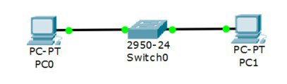
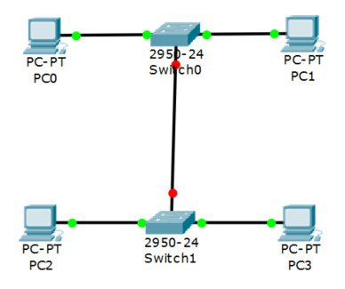
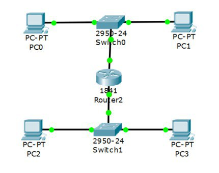
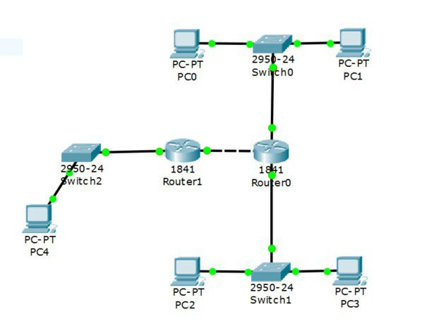

Станкин
|
Станкин |
| A | B | C | |
|---|---|---|---|
| Кол-во узлов | 5 | 965 | 1024 |
| subnet | 192.168.2.0 | 172.16.2.0 | 10.10.2.0 |
| mask | 255.255.255.248 | 255.255.252.0 | 255.255.248.0 |
| broadcast | 192.168.2.7 | 172.16.5.255 | 10.10.9.255 |





| Устройство | IP - адрес | Маска | Шлюз |
|---|---|---|---|
| PC0 | 192.168.2.6 | 255.255.255.248 | 192.168.2.1 |
| PC1 | 192.168.2.5 | 255.255.255.248 | 192.168.2.1 |
| PC2 | 172.16.5.254 | 255.255.252.0 | 172.16.2.1 |
| PC3 | 172.16.5.253 | 255.255.252.0 | 172.16.2.1 |
| PC4 | 10.10.9.254 | 255.255.248.0 | 10.10.2.1 |
| R0 0/0 | 192.168.2.1 | 255.255.255.248 | |
| R0 0/1 | 172.16.2.1 | 255.255.252.0 | |
| R0 0/2 | 15.15.2.2 | 255.255.255.252 | |
| R1 0/1 | 10.10.2.1 | 255.255.248.0 | |
| R1 0/2 | 15.15.2.1 | 255.255.255.252 |

Пакеты успешно отправляются!